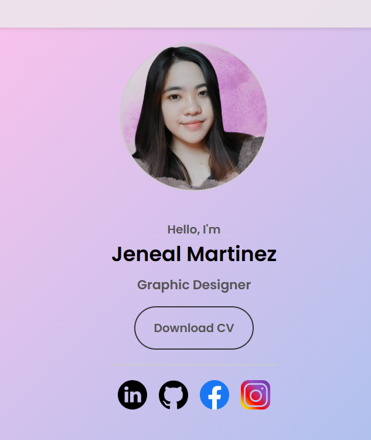
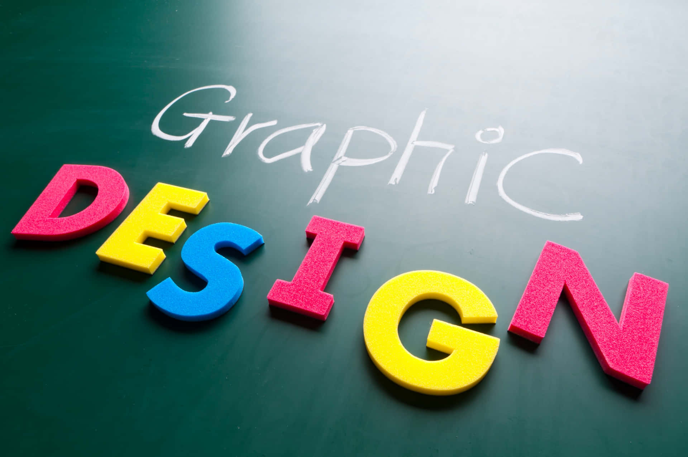
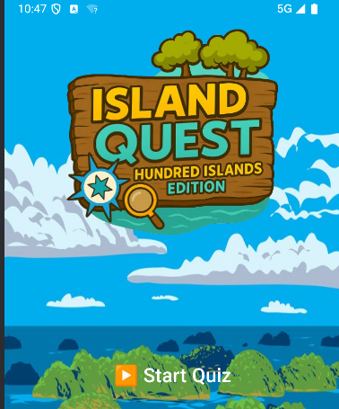
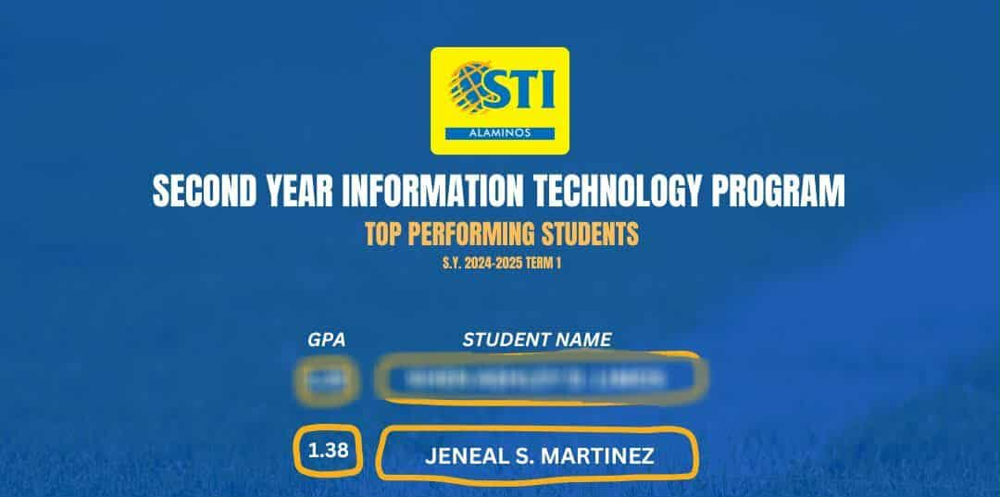
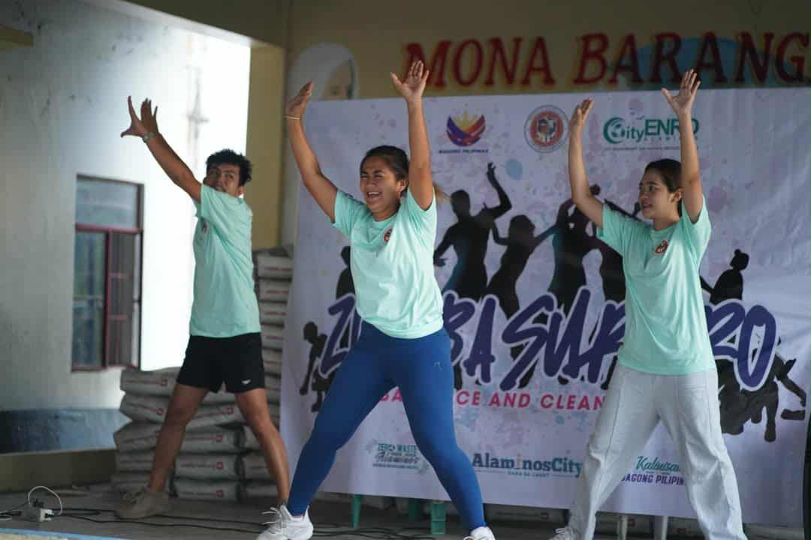

📝 How I Designed My Portfolio
📅 Feb-June 2025

Designing this portfolio website was a fun and meaningful project for me. I wanted something that truly reflected my personality and skills—not just as a developer, but also as a graphic designer.
🧠 Planning the Structure
- Home
- About Me
- Experience
- Blog
- Contact
I drafted a layout sketch on paper and imagined how I wanted each section to flow visually. Keeping it simple and clean was my goal.
💻 Tools I Used
- Visual Studio Code: Built the entire site using HTML, CSS, and JavaScript.
- Flexbox & Media Queries: Ensured responsiveness.
- JavaScript: Used for smooth scroll and interactivity.
"A portfolio is more than a website—it's your story, your brand, and your creative playground."
📝 Tips for Aspiring Graphic Designers
📅 Feb-June 2025

Getting into graphic design can feel intimidating at first, but with the right tools and mindset, it becomes exciting and rewarding. Here’s what I’ve learned:
🛠 Tools That Help Me
- Canva: Great for fast and stylish designs.
- Photoshop: Perfect for photo manipulation and custom graphics.
💡 Practical Tips
- Master the Basics: Layout principles like alignment, contrast, and whitespace.
- Practice Projects: Logos, posters, Instagram posts.
- Save Everything: You'll see improvement and reuse ideas.
- Watch Tutorials: YouTube is a goldmine.
- Ask for Feedback: Join Facebook groups or ask friends.
🌟 “You don’t need expensive tools to be a good designer—just creativity, curiosity, and consistency.”
🎮 Building "Island Quest: Hundred Islands Edition"
📅 April-May 2025

This was my first full-featured Android game. The goal: create a fun, educational quiz app about the Hundred Islands National Park in Pangasinan.
🧩 Features
- ✅ Login and Authentication
- ✅ Multiple-choice Quiz
- ✅ Leaderboard System
- ✅ Sound Effects & Animations
- ✅ Fun Facts
🧠 Lessons Learned
Learned to organize activities in Android Studio, manage scores, handle user data, and design UI transitions.
🛠 Tech Stack
- Language: Java
- IDE: Android Studio
- Target API: Android 5.0+
- Graphics: Photoshop & Canva
🏝️ "Building this game made me fall in love with Android development. It’s just the beginning!"
🎓 My Journey in STI Alaminos as a Top Student
📅 March 2024

Becoming one of the top students at STI Alaminos didn’t happen overnight. It took discipline, passion, and a clear vision of who I wanted to become. From day one, I made a promise to myself to stay consistent and strive for excellence in everything I do.
📚 Study Habits That Helped Me
- Time Blocking: Dedicated hours for study, rest, and personal time.
- Group Reviews: Learned better through collaboration.
- Visual Notes: Turned concepts into diagrams and flowcharts.
🏆 Highlights of My Journey
- Consistently making it to the Dean’s List.
- Helping peers through tutoring and group studies.
📘 "Success in school isn't about being the smartest—it's about being the most consistent and curious."
🌱 Life as an Intern at the City ENRO Alaminos City
📅 February_April 2025

Interning at the City Environment and Natural Resources Office (ENRO) in Alaminos City gave me real-world experience and a deeper understanding of environmental work. Every day brought something different—from fieldwork to creative tasks.
💼 Tasks and Experiences
- Edited environmental trivias and fun facts for ENRO materials.
- Participated in caravans and Zumba events for community engagement.
- Participated in community clean-up drives and awareness campaigns.
💡 What I Learned
This internship taught me the value of sustainability and the importance of educating people on how small actions can protect our natural resources. It also boosted my confidence in dealing with people.
🌍 “The environment is everyone’s responsibility. I’m proud to have contributed—no matter how small.”